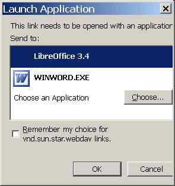

20111025¶
Using custom URL protocol handler?¶
Oho, if I have the following links:
<a href="vnd.sun.star.webdav://test.rtf">test.rtf</a>
<a href="vnd.sun.star.webdav:/lino/media/webdav/test/test.doc">test.doc</a>
then FF asks me:
{kind=link}
My decision is save in Firefox’s where I can also later change it again.
When I do the same with a fictive protocol foofoo:
<a href="foofoo://test.rtf">test.rtf</a>
<a href="foofoo:/lino/media/webdav/test/test.doc">test.doc</a>
The I get another reaction:
HKEY_CLASSES_ROOTvnd.sun.star.webdav
Found problem with DavLink¶
The mysterious problem with the DavLink applet was that the following exception was not displayed in the Java console:
[20:45:47.095] uncaught exception: java.security.AccessControlException: access denied ("java.lang.RuntimePermission" "getenv.SystemDrive")
But it was visible in the JavaScript console where I didn’t happen to look (don’t ask me why). After modifying the SecurityManager to irgnore also this AccessControlException, it works again.